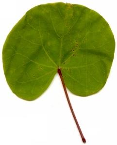

|
| Woher kommt der Name Judasbaum?
 | Die Bibel (Matthäus 27,3-5) erzählt von Judas, der Jesus an die Römer verriet und dafür mit Silberstücken belohnt wurde.
Hinterher bereute Judas seinen Verrat sehr. Er wollte deshalb nicht weiterleben und erhängte sich an einem Baum.
Der Sage nach war dieser Baum ein Judasbaum. Seine runden Blätter erinnern an die Silberstücke.
|